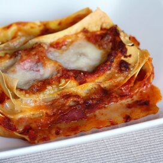

Lasagne Recipe
Healthy Lasagne!
- prep: 15 mins
- serves 4
- cook : 1 hour and 15 mins
Method
- Heat the oven to 180C/160C fan/gas 4. Heat the oil in a large frying pan over a medium heat and fry the onion, carrots, celery and one of the bay leaves for 8-10 mins until the veg softens and is starting to turn golden. Add the mince and garlic, and stir-fry until the beef browns, about 5 mins. Tip in the tomatoes and a canful of water, the tomato purée and bouillon, bring to the boil, then cover and simmer for 20 mins, removing the lid after 10 mins to reduce the mixture slightly.
- Meanwhile, pour the milk into a medium pan with the flour and whisk over a low heat until the mixture is lump-free. Add the second bay leaf and a good pinch of nutmeg, and continue to cook, whisking, for 8-10 mins until thick.
- Remove the bay from the mince and white sauce, and discard. Spoon a third of the mince into the base of a 19 x 24cm baking dish and top with two lasagne sheets. Spoon over half of the remaining mince, then top with two more lasagne sheets, the rest of the mince and the remaining lasagne sheets. Spoon over the white sauce and sprinkle with the cheese. Bake for 40 mins until bubbling and golden.
Ingredients
1 tbsp olive oil
1 large onion (250g), finely chopped
320g carrots, finely chopped
2 celery sticks (140g), finely chopped
2 bay leaves
500g 5% beef mince
3 large garlic cloves, finely grated
400g can chopped tomatoes
2 tbsp tomato purée
1½ tsp vegetable bouillon powder
400ml semi-skimmed milk
30g wholemeal flour
generous pinch of nutmeg
6 sheets wholemeal lasagne (125g)
25g finely grated parmesan
